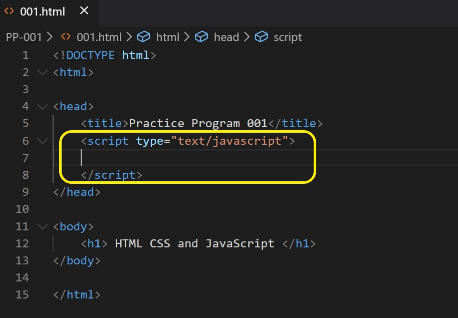

JAVASCRIPT
An Introduction to JavaScript
==> Let’s see what’s so special about JavaScript, what we can achieve with it, and what other technologies play well with it.
What is JavaScript?
JavaScript was initially created to “make web pages alive”. The programs in this language are called scripts. They can be written right in a web page’s HTML and run automatically as the page loads. Scripts are provided and executed as plain text. They don’t need special preparation or compilation to run. In this aspect, JavaScript is very different from another language called Java.
Why is it called JavaScript?
When JavaScript was created, it initially had another name: “LiveScript”. But Java was very popular at that time, so it was decided that positioning a new language as a “younger brother” of Java would help. But as it evolved, JavaScript became a fully independent language with its own specification called ECMAScript, and now it has no relation to Java at all.
JavaScript Fundamental
This part of the tutorial is about core JavaScript, the language itself. But we need a working environment to run our scripts and, since this book is online, the browser is a good choice. We’ll keep the amount of browser-specific commands (like alert) to a minimum so that you don’t spend time on them if you plan to concentrate on another environment (like Node.js). We’ll focus on JavaScript in the browser in the next part of the tutorial. So first, let’s see how we attach a script to a webpage. For server-side environments (like Node.js), you can execute the script with a command like "node my.js"
The “script” tag
JavaScript programs can be inserted almost anywhere into an HTML document using the script tag. For instance:
Variables
variables to store data by using the var, let, or const keywords.
Let
– is a modern variable declaration.
Var
– is an old-school variable declaration. Normally we don’t use it at all, but we’ll cover subtle differences
from let in the chapter The old "var", just in case you need them.
const
– is like let, but the value of the variable can’t be changed
Variables should be named in a way that allows us to easily understand what’s inside them.
Data Type
There are 8 basic data types in JavaScript.
. Seven primitive data types:
.number for numbers of any kind: integer or floating-point, integers are limited by ±(253-1). .bigint for integer numbers of arbitrary length. .string for strings. A string may have zero or more characters, there’s no separate single-character type. .boolean for true/false. .null for unknown values – a standalone type that has a single value null. .undefined for unassigned values – a standalone type that has a single value undefined. .symbol for unique identifiers. :- And one non-primitive data type: .object for more complex data structures. :-The typeof operator allows us to see which type is stored in a variable. .Usually used as typeof x, but typeof(x) is also possible. .Returns a string with the name of the type, like "string". .For null returns "object" – this is an error in the language, it’s not actually an objectInteraction: alert, prompt, confirm
alert
This one we’ve seen already. It shows a message and waits for the user to press “OK”.(shows a message)
For example:
alert("Hello");Prompt
shows a message asking the user to input text. It returns the text or, if Cancel button or Esc is clicked, null
result = prossmpt(title, [default]);
confirm
shows a message and waits for the user to press “OK” or “Cancel”. It returns true for OK and false for Cancel/Esc.
Basic operators, maths
We know many operators from school. They are things like addition +, multiplication *, subtraction -, and
so on.
Terms: “unary”, “binary”, “operand”
Before we move on, let’s grasp some common terminology.
operands: the left operand is 5 and the right operand is 2. Sometimes, people call these “arguments”
instead of “operands”.
Maths
The following math operations are supported:
conditional branching: if, '?'
Sometimes, we need to perform different actions based on different condition
The if(...) statement evaluates a condition in parentheses and, if the result is true, executes a block of code.
For example:
1 let year = prompt('In which year was ECMAScript-2015 specification published?', '');
2
3 if (year == 2015) alert( 'You are right!' );
In the example above, the condition is a simple equality check (year == 2015), but it can be much more complex.
conditions: “else if”
Sometimes, we’d like to test several variants of a condition. The else if clause lets us do that.
For example:
let year = prompt('In which year was the ECMAScript-2015 specification published?', '');
if (year < 2015) {
alert( 'Too early...' );
} else if (year > 2015) {
alert( 'Too late' );
} else {
alert( 'Exactly!' );
}
In the code above, JavaScript first checks year < 2015. If that is falsy, it goes to the next condition year >
2015. If that is also falsy, it shows the last alert.
There can be more else if blocks. The final else is optional.
Logical operators
There are four logical operators in JavaScript: || (OR), && (AND), ! (NOT), ?? (Nullish Coalescing). Here we cover the first three, the ?? operator is in the next article.
Although they are called “logical”, they can be applied to values of any type, not only boolean. Their result can also be of any type.
Let’s see the details.
|| (OR)
The “OR” operator is represented with two vertical line symbols:
result = a || b;
In classical programming, the logical OR is meant to manipulate boolean values only. If any of its arguments are true,
it returns true, otherwise it returns false.
In JavaScript, the operator is a little bit trickier and more powerful. But first, let’s see what happens with boolean values.
&& (AND)
The AND operator is represented with two ampersands &&:
result = a && b;
In classical programming, AND returns true if both operands are truthy and false otherwise:
Loops: while and for
We covered 3 types of loops:
To make an “infinite” loop, usually the while(true) construct is used. Such a loop, just like any other, can be stopped with the break directive.
If we don’t want to do anything in the current iteration and would like to forward to the next one, we can use the continue directive.
break/continue support labels before the loop. A label is the only way for break/continue to escape a nested loop to go to an outer one while(…) {…}.
The “for” loop
The for loop is more complex, but it’s also the most commonly used loop.
It looks like this:-
for (begin; condition; step) {
// ... loop body ...
}
The "switch" statement
A switch statement can replace multiple if checks.
It gives a more descriptive way to compare a value with multiple variants.
The syntax
The switch has one or more case blocks and an optional default.
It looks like this:
1. switch(x) {
2. case 'value1': // if (x === 'value1')
3. ...
4. [break]
5.case 'value2': // if (x === 'value2')
6. ...
7. [break]
8. default:
9. ...
10. [break]
}second (value2) and so on.
nearest break (or until the end of switch).
Functions
A function declaration looks like this:
1. function name(parameters, delimited, by, comma) {
2. /* code */
3. }
doesn’t see its local variables.
To make the code clean and easy to understand, it’s recommended to use mainly local variables and parameters
in the function, not outer variables.
It is always easier to understand a function which gets parameters, works with them and returns a result than a
function which gets no parameters, but modifies outer variables as a side effect.
Function naming:
instantly gives us an understanding what it does and returns.
to hint what a function does.
Functions are the main building blocks of scripts. Now we’ve covered the basics, so we actually can start creating
and using them. But that’s only the beginning of the path. We are going to return to them many times, going
more deeply into their advanced features.